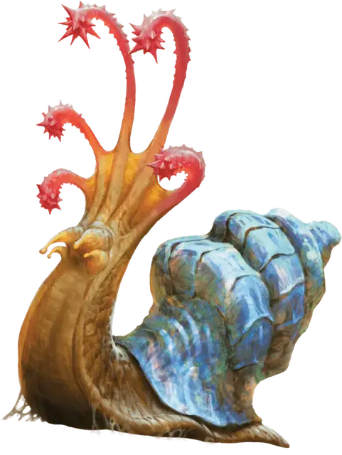

Цеповая улитка
Flail Snail
Большой Элементаль, без мировоззрения

Класс Доспеха 16 (природный доспех)
Хиты 52 (5к10 + 25)
Скорость 10 футов
| мод | спас | ||
|---|---|---|---|
| СИЛ | 17 | +3 | +3 |
| ЛОВ | 5 | −3 | −3 |
| ТЕЛ | 20 | +5 | +5 |
| мод | спас | ||
|---|---|---|---|
| ИНТ | 3 | −4 | −4 |
| МДР | 10 | +0 | +0 |
| ХАР | 5 | −3 | −3 |
Иммунитет к урону огонь, яд
Иммунитет к состояниям отравление
Чувства тёмное зрение 60 футов, пассивное Восприятие 10, чувство вибрации 60 футов
Опасность 3 (700 опыта)
Бонус мастерства +2
Среда обитания Болото, Лес, Подземье
Особенности
Антимагическая раковина. . Улитка имеет преимущество на спасброски от заклинаний и любое существо, совершающее атаку заклинанием по улитке получает помеху на бросок на попадание. Если улитка преуспевает в спасброске от заклинания или атака заклинанием промахивается по ней, то может возникнуть дополнительный эффект, определяемый броском кубика:
• 1–2. Если заклинание воздействует на область или имеет несколько целей, то оно проваливается и не имеет эффекта. Если заклинание имеет целью только улитку, то оно не имеет эффекта на улитку и отбрасывается назад в заклинателя, используя уровень ячейки, Сл спасброска, бонус к попаданию и колдовскую способность заклинателя.
• 3–4. Никакого дополнительного эффекта.
• 5–6. Раковина улитки преобразует часть энергии заклинания во взрыв разрушающей силы. Каждое существо не далее 30 футов от улитки должно пройти спасбросок Телосложения Сл 15 и получить по 1к6 урона силой за каждый уровень заклинания при провале или половину этого урона при успехе.
Цепные щупальца. Цеповая улитка имеет пять цепных щупалец. Если улитка получает 10 или более урона в один ход, то одно из её щупалец погибает. Даже если останется только одно щупальце, то улитка восстановит все погибшие за 1к4 дней. Если все щупальца умрут, то улитка втягивается в раковину, получает полное укрытие и начинает вопить, этот звук слышно в радиусе 600 футов, остановится она только когда умрет через 5к6 минут. Магия лечения, которая восстанавливает части тела, такая как заклинание регенерация [regenerate], может остановить процесс умирания.
Действия
Мультиатака. Цеповая улитка совершает столько атак Цепными Щупальцами, сколько у неё их осталось, всеми по одной цели.
Цепное щупальце. . Рукопашная атака оружием: +5 к попаданию, досягаемость 10 футов, одна цель. Попадание: 6 (1к6+ 3) дробящего урона.
Сверкающая раковина (Перезаряжается после короткого или продолжительного отдыха). . Раковина улитки испускает ослепительный, цветной свет до конца следующего хода улитки. В это время раковина испускает яркий свет в радиусе 30 футов, и существа, которые могут видеть улитку, получают помеху на броски на попадание по ней. Кроме того, любое существо в ярком свете и могущее видеть улитку, должно совершить спасбросок Мудрости Сл 15 в момент активации способности или стать ошеломленным до окончания эффекта.
Защита в раковине. . Цеповая улитка отступает в свою раковину и получает бонус +4 к КД до того, как снова появится. Она может появиться из раковины бонусным действием в свой ход.
Описание
Цеповая улитка – существо элементальной земли, которая ценится за свою разноцветную раковину. При виде этого неторопливого, внешне безвредного существа, у многих охотников складывается ложное ощущение самоуверенности. Но если любое существо, достаточно большое, чтобы быть угрозой для цеповой улитки, приближается к ней слишком близко, улитка выдает вспышку света и атакует своими палицеподобными щупальцами.
След из сокровищ. Если её не беспокоить, цеповая улитка медленно движется по земле, поглощая всё на её поверхности, включая камни, песок и почву, и останавливаясь, чтобы полакомиться выростами кристаллов или залежами минералов. За собой она оставляет мерцающий след, который быстро застывает и превращается в тонкий слой почти прозрачной субстанции, которая несъедобна для улитки. Этот стекловидный материал может быть собран и разрезан на панели для окон различной степени прозрачности. Также он может быть нагрет и преобразован в другие стеклянные объекты. Некоторые гуманоиды зарабатывают на жизнь, преследуя цеповых улиток и собирая это стекло.
Использование раковины цеповой улитки
Раковина цеповой улитки, весящая около 250 фунтов, обладает множеством применений. Неповрежденная раковина может быть продана за 5,000 зм.
Охотники ценят раковину за её антимагические свойства. Умелый бронник может сделать три щита из одной раковины. На один месяц каждый щит даёт своему носителю принадлежащее улитке свойство Антимагическая Раковина. Когда магия щита ослабевает, остается экзотический щит, идеальный для изготовления щита от заклинаний.
Также из раковины цеповой улитки можно сделать мантию сияющих цветов. Раковину расталкивают в порошок, который добавляется в краску, которой красится одеяние. Порошок также служит материальным компонентом ритуала, которым зачаровывается мантия.